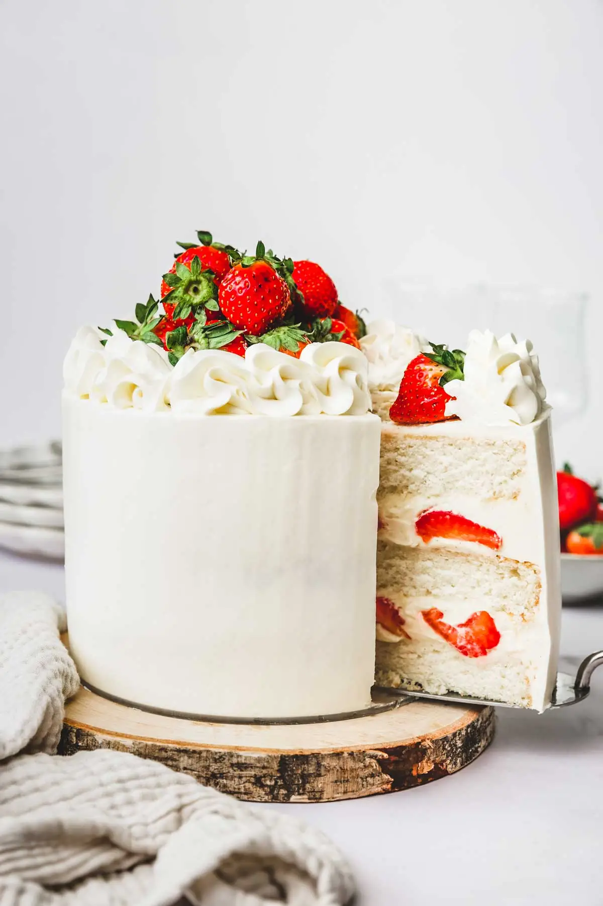

Cake

Description
Indugent cake layers filled with creamy frosting, adorned
with decadent toppings, and baked to perfection, a sweet
symphony of flavors.
Ingredients
- flour
- sugar
- butter
- baking powder
- fruit
Steps
- Preheat your oven to the specified temperature and prepare your cake pans by greasing and flouring them.
- In a mixing bowl, cream together the butter and sugar until light and fluffy.
- Gradually add the eggs, one at a time, beating well after each addition.
- Sift together the dry ingredients (flour, baking powder, etc.) and gradually add them to the wet mixture, alternating with the addition of any liquids (milk, vanilla extract, etc.).
- Divide the batter evenly between the prepared cake pans and bake in the preheated oven for the specified time, or until a toothpick inserted into the center comes out clean. Allow the cakes to cool completely before frosting and serving.